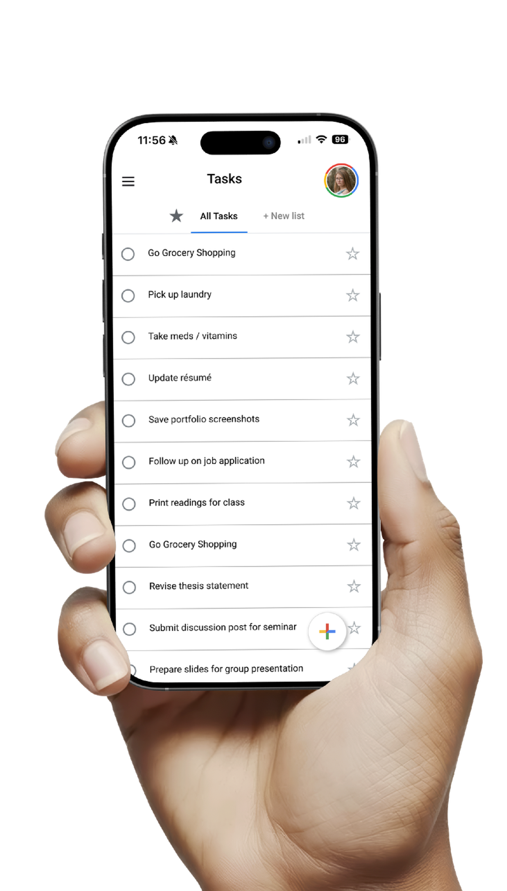
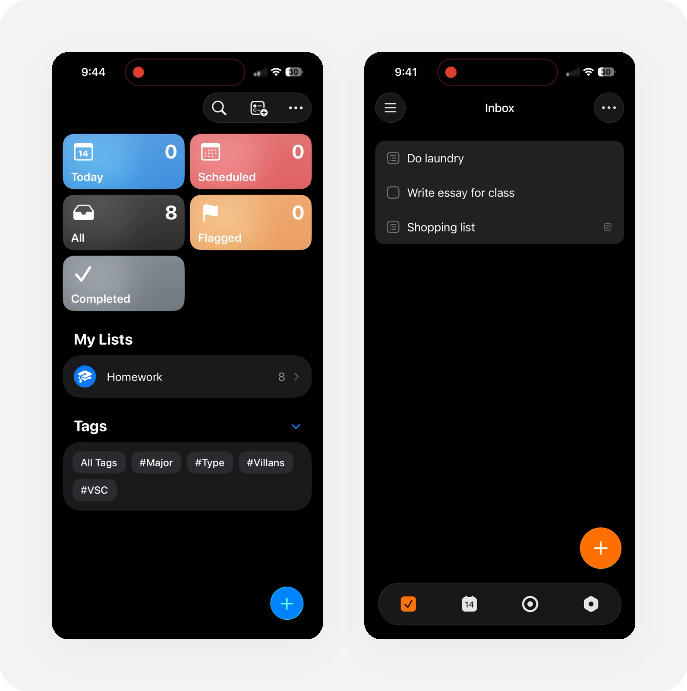
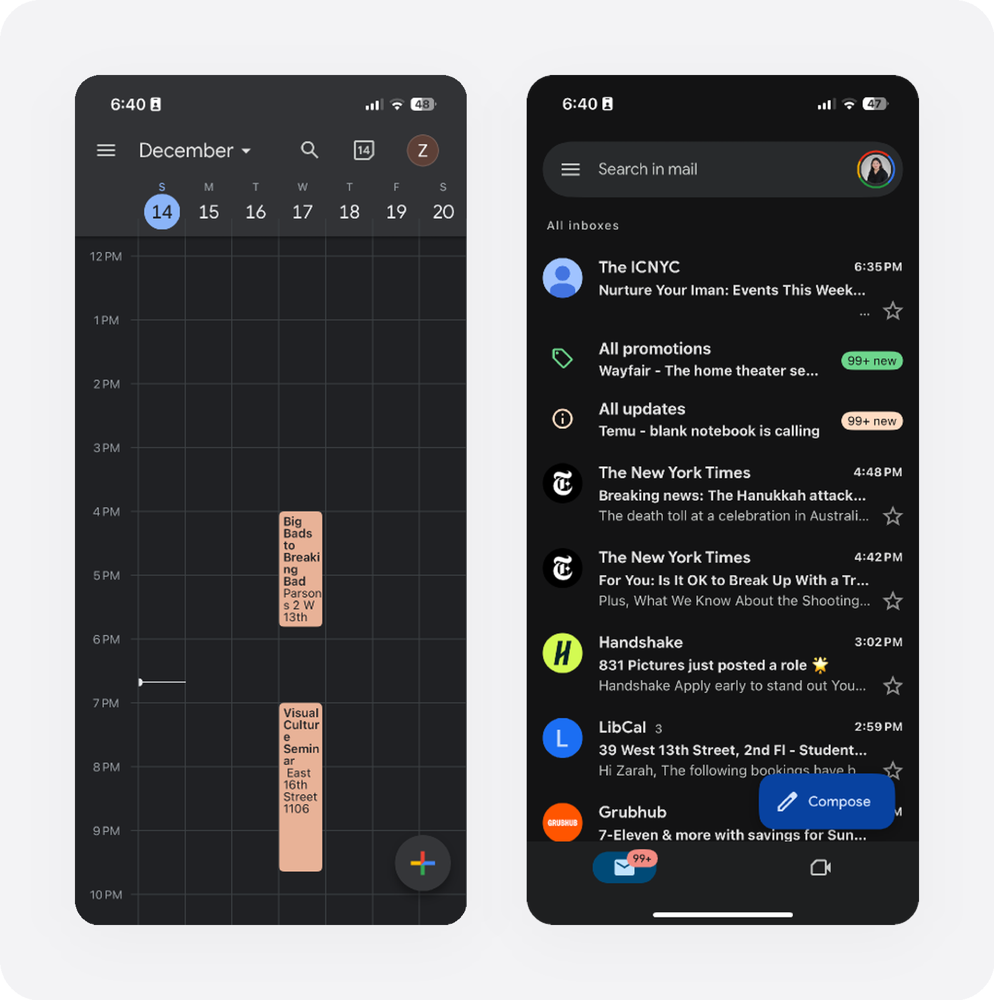
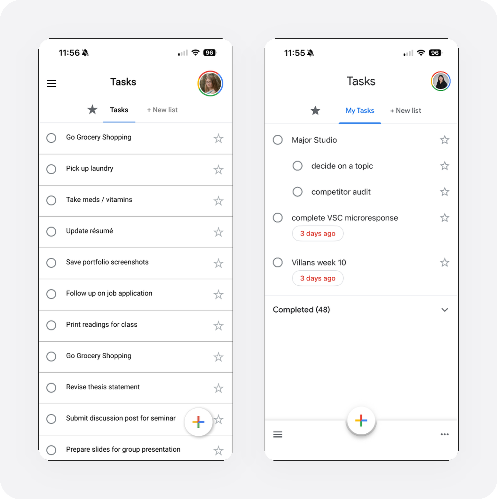
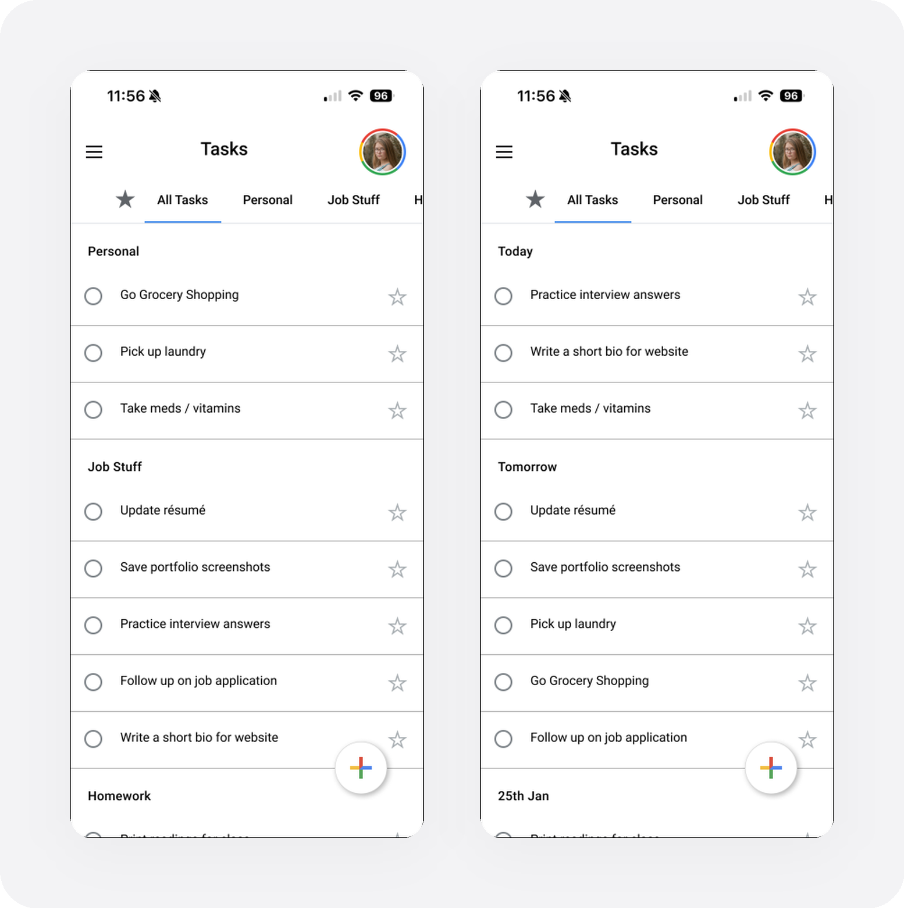
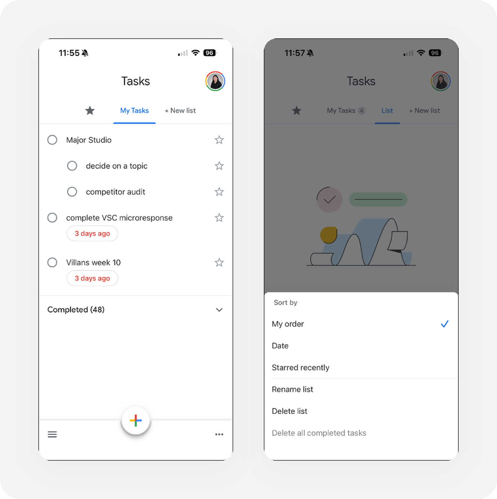
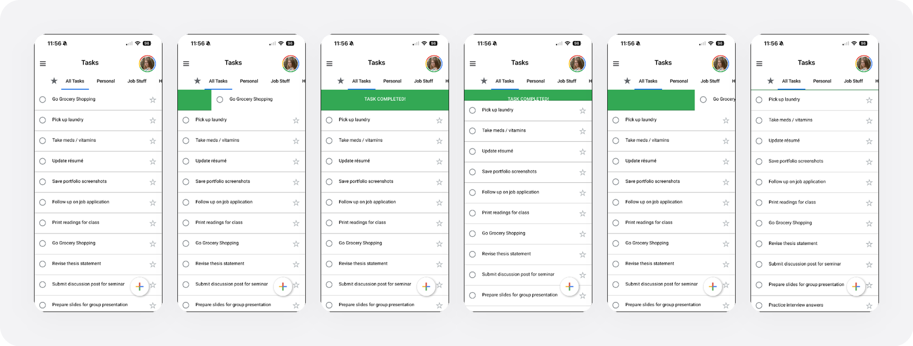
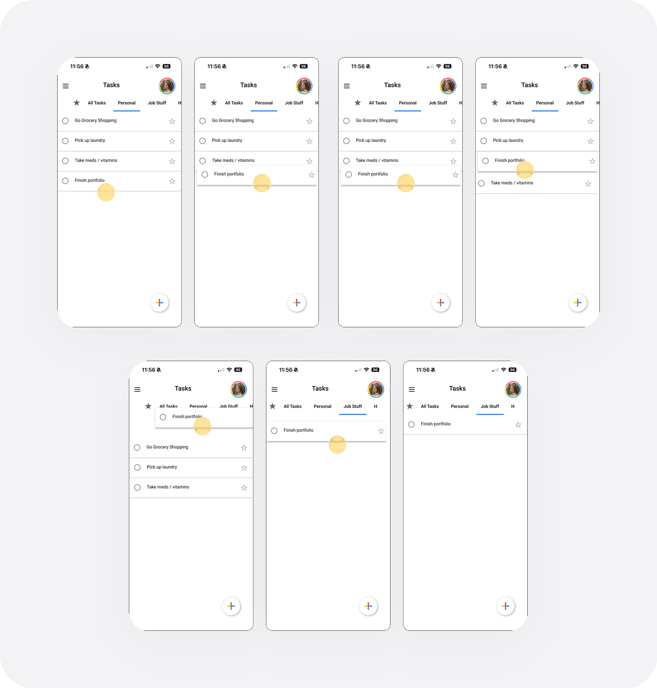
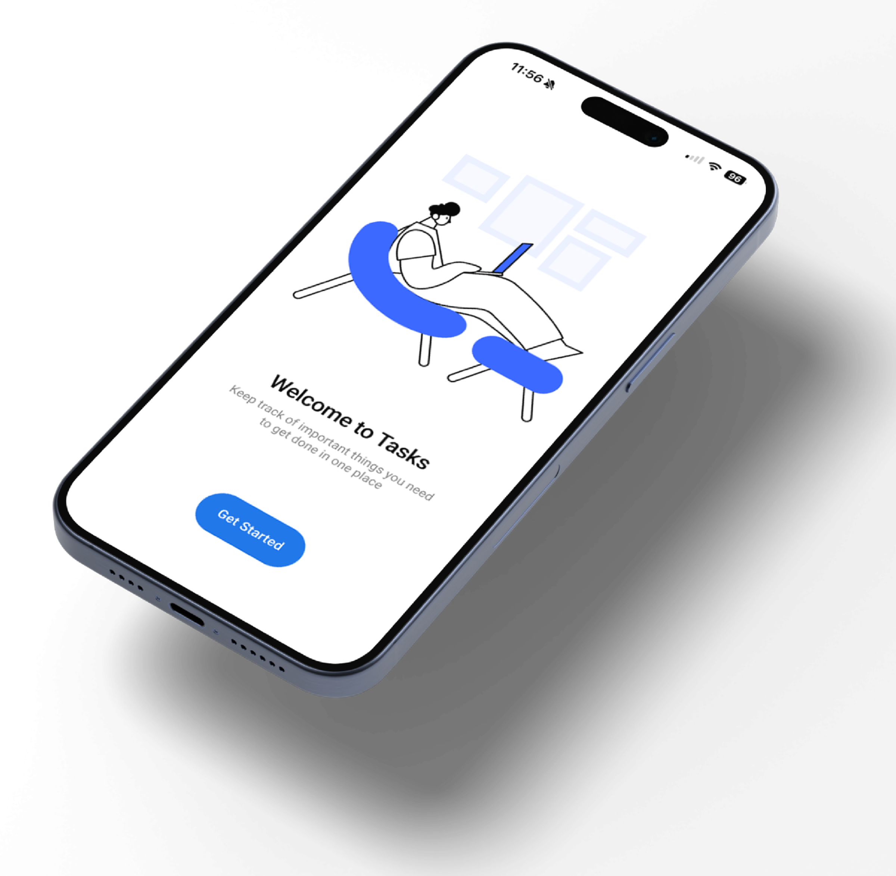

Google Tasks
Bringing flexible organization to Google Tasks
Google Tasks is the simplest task app Google makes — and the first one people outgrow. This project asked how it could hold more of real life without losing the lightness that makes people reach for it in the first place.
The answer wasn't more features. It was organization that bends to the day you're having, built entirely from patterns Google users already know. Over seven weeks I ran interviews, competitor and app audits, and two rounds of testing to design a way to group, sort, and move tasks that feels discovered rather than learned.
Google Tasks — 2025
The Problem
One list, every kind of life. Work, errands, coursework, and someday-maybes all pile into a single stream with no way to group them, sort them, or shift focus.
Every person I spoke to said a version of the same thing: the app is great at catching a task and useless at helping them decide what to actually do next. So the real planning happened in their heads — the tool held the list, but never the priorities.

Research
I approached it from four angles: user interviews, a competitor audit, secondary research, and an audit of Google Tasks itself. Four participants across Google Tasks, Apple Reminders, and Notion showed a consistent pattern — everyone captured quickly, everyone planned mentally, and no one felt their app helped them choose what mattered now.
The competitors drew the boundaries of the problem. TickTick buys flexibility with complexity; Apple Reminders buys power with hidden depth. Neither offered flexible and simple at once — and that gap became the opening.

The Insight
Organization isn't one thing. Needs change day to day, so people don't want the one right structure handed to them — they want to switch structures without friction. As one tester, Riya, put it: "I change my view on tasks every day. Sometimes I want to see the ones due in the next week, sometimes I want to see them by class. It changes every day."
Two more findings shaped the direction: users lean on familiar Google interaction patterns to know where organization lives, and when those patterns are missing, features simply go undiscovered — but pile on too many options at once and the whole thing feels overwhelming.
The brief wrote itself into a single question: how can I introduce a flexible organizational system while staying loyal to Google's brand, interaction patterns, and design language?
Staying Loyal to Google
Familiar on top, flexible underneath. I audited Calendar, Gmail, and Keep and found one consistent grammar — side-panel navigation, small section headings, and a persistent "+" for adding things. Google Tasks was the outlier that had never adopted it.
So the redesign borrows that grammar wholesale. New organization lives exactly where a Google user already expects to find it, which means it reads as recognition, not a feature to learn.

Design — Consistency
Small changes, big legibility. Aligning Tasks with the wider Google system — the navigation, the headings, the add action — turned a flat, ambiguous list into a screen whose structure you can read at a glance.

Design — Flexible Organization
Group it your way. Tasks can now be organized by list or by due date, and switched between the two in a tap — the same tasks, reshaped around whatever today needs. Sorting is available on demand rather than baked into the view, so control is there when you want it and out of the way when you don't.


Interactions
The details carry the feeling. Swipe to complete gives a task a satisfying, unmistakable close — and moving a task from one list to another is a direct drag, no menus, no dialogs.


Testing
I tested in two rounds — three participants early, two more once the organizational system took shape — spanning students, working professionals, and parents. Phase one confirmed the appetite for flexible views; phase two pressure-tested whether the Google-borrowed patterns actually made those views discoverable. They did: people reached for organization where they expected it, without being told it was there.
Outcome
Structure that keeps up. Tasks stopped being one long stream and became a view you can reshape in a tap — more control, no new vocabulary. It stays loyal to Google's design language while finally answering the question users were really asking: not "what's on my list," but "what should I look at right now."

Next Steps
- Deeper integration with Google Calendar for time-based task planning
- Subtle task-completion feedback to reinforce a sense of progress
- Further testing to refine the default organizational behavior